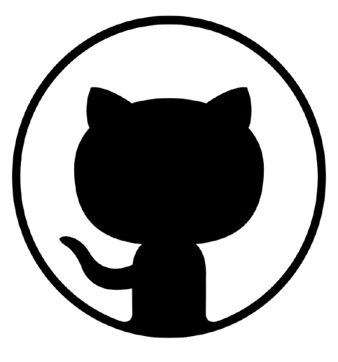

Renata Andrade
(11) 98936-7947
@renathaandrade93
 @TryToBeaDEV
* Sobre Mim *
"Sou estudante de Análise e Desenvolvimento de Sistemas na FATEC Ferraz, com foco contínuo em aprimoramento e aprendizado através de práticas e cursos. Com habilidades interpessoais como empatia, liderança e facilidade em lidar com pessoas, destaco-me pela capacidade de identificar problemas e desenvolver soluções eficazes e inovadoras.
Residente em Ferraz, tenho 31 anos, sou mãe de dois filhos, incluindo um menino autista de 7 anos, o que fortalece minha resiliência e adaptabilidade.
Atualmente, busco uma oportunidade no setor de tecnologia para aplicar meu conhecimento técnico e habilidades, para contribuir com o desenvolvimento de projetos inovadores e que impactem positivamente o mundo.
Meu propósito é atuar de forma estratégica na área de tecnologia, criando soluções que não apenas impulsionem o sucesso das empresas, mas também melhorem a vida das pessoas, sempre com foco na eficiência e inovação."
Minhas Habilidades
HTML5
JAVA
PYTHON
Meus Projetos
- Despertador Moderno Ver Projeto